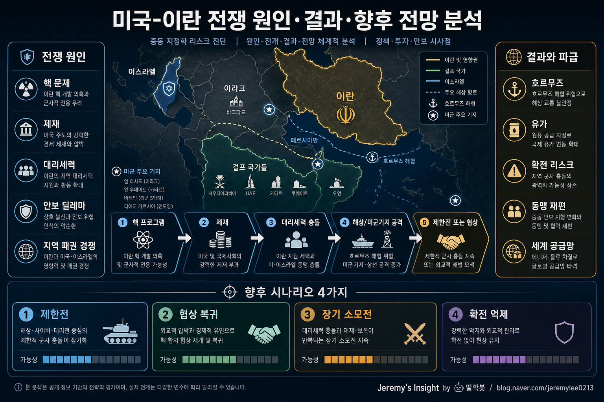

260502 미국 이란 전쟁 원인 결과 향후 전망 분석 보고서

핵심 결론
- ⚔️ 미국-이란 충돌의 본질은 단일 사건보다 핵·제재·대리세력·역내 패권이 겹친 구조적 충돌임
- 🛢️ 전면전 가능성은 낮지만, 호르무즈·미군기지·이스라엘 축에서 제한전과 오판 리스크는 계속 높음
- 🧭 향후 전망은 군사 승패보다 핵 협상 복귀, 이란 내부 안정, 유가 충격 관리 여부가 좌우함
전제
이 보고서는 “미국과 이란의 실제 전면전”이 이미 확정됐다는 뜻이 아니라, 미국-이란 군사 충돌이 발생하거나 확대될 경우의 원인, 결과, 향후 전망을 분석한 것이다.
현재 미국과 이란의 갈등은 전통적인 국가 대 국가 전쟁보다 복잡하다. 직접 충돌, 경제 제재, 핵 협상, 이스라엘 변수, 이라크·시리아·예멘·레바논의 대리세력, 호르무즈 해협 에너지 안보가 동시에 얽혀 있다.
왜 충돌이 반복되는가
미국-이란 갈등의 출발점은 1979년 이란 혁명 이후의 체제 충돌이다. 미국은 중동 질서와 동맹망을 유지하려 하고, 이란은 미국 중심 질서를 자국 안보 위협으로 본다.
여기에 핵 문제가 붙으면서 갈등은 장기화됐다. 미국과 서방은 이란의 핵 프로그램을 핵무장 잠재력으로 보고 압박한다. 이란은 이를 주권과 억지력의 문제로 본다.
| 원인 | 미국 관점 | 이란 관점 | 충돌 효과 |
|---|---|---|---|
| 핵 프로그램 | 핵확산 차단 | 체제 안전 보장 | 협상과 제재 반복 |
| 경제 제재 | 압박 수단 | 경제전·주권 침해 | 강경파 강화 가능 |
| 대리세력 | 미군·동맹 위협 | 전방 방어선 | 제한전 위험 증가 |
| 이스라엘 변수 | 핵·안보 동맹 | 직접 위협 | 확전 방아쇠 |
| 호르무즈 해협 | 에너지 안보 | 압박 카드 | 유가 급등 위험 |
직접 전면전이 어려운 이유
미국은 이란을 군사적으로 압도할 수 있지만, 점령전이나 장기 지상전은 정치·비용 부담이 너무 크다. 이라크 전쟁의 경험 때문에 미국 내부에서도 중동 대규모 전쟁에 대한 피로감이 크다.
이란 역시 미국과 정면으로 전면전을 벌이면 체제 생존이 위험해진다. 그래서 이란은 직접 충돌보다 대리세력, 미사일, 드론, 해상 교란, 사이버 공격 같은 비대칭 수단을 선호한다.
즉 양쪽 모두 전면전을 원하지 않지만, 제한 충돌은 언제든 커질 수 있다.
가장 위험한 지점은 의도된 전쟁보다 오판에 의한 확전이다.
전쟁 또는 군사 충돌의 예상 결과
미국과 이란의 충돌이 확대될 경우 결과는 전장보다 경제와 정치에서 더 크게 나타날 가능성이 높다.
| 영역 | 예상 결과 | 파급 |
|---|---|---|
| 군사 | 미군의 정밀타격 우위 | 이란 핵·미사일 시설 피해 가능 |
| 역내 안보 | 이라크·시리아·예멘·레바논 긴장 고조 | 미군기지·이스라엘·걸프 국가 위험 증가 |
| 에너지 | 호르무즈 리스크 반영 | 유가 급등, 해운 보험료 상승 |
| 금융시장 | 위험회피 심리 확대 | 달러·금·에너지주 강세 가능 |
| 이란 내부 | 체제 결속 또는 민심 악화 | 단기 결속, 장기 불만 가능 |
| 미국 정치 | 강경론과 전쟁 피로감 충돌 | 대선·의회 변수와 연결 |
미국이 단기 군사작전에서 우위를 보일 가능성은 높다. 그러나 그것이 전략적 승리로 바로 이어지지는 않는다. 이란은 지리적으로 크고, 산악지형과 분산된 군사 시설을 갖고 있으며, 역내 대리 네트워크를 통해 장기 소모전을 만들 수 있다.
향후 시나리오
| 시나리오 | 가능성 | 내용 | 관찰 포인트 |
|---|---|---|---|
| 제한 충돌 후 관리 | 높음 | 공습·보복 후 외교 채널로 진정 | 사상자 규모, 보복 수위 |
| 장기 저강도 충돌 | 높음 | 대리세력·드론·해상 교란 반복 | 이라크·시리아 미군기지 공격 |
| 핵 협상 복귀 | 중간 | 제재 완화와 핵 제한 맞교환 | IAEA 협력, 미국 제재 신호 |
| 전면전 확대 | 낮음~중간 | 이스라엘·호르무즈·미군 사망자 변수로 확전 | 호르무즈 봉쇄, 대규모 사상자 |
가장 현실적인 기본 시나리오는 전면전보다 제한 충돌과 협상 사이의 반복이다. 양측 모두 체면을 세울 정도의 군사 행동은 할 수 있지만, 통제 불가능한 전쟁은 피하려 할 가능성이 높다.
비판적 관점
미국 강경론은 이란을 압박하면 양보할 것이라고 본다. 하지만 과도한 압박은 오히려 이란 강경파를 강화하고, 핵 프로그램을 더 지하화·분산화할 수 있다.
반대로 외교론은 협상으로 관리할 수 있다고 보지만, 이란의 역내 대리세력 활동과 이스라엘 안보 우려를 충분히 해결하지 못하면 협상은 쉽게 깨질 수 있다.
즉 군사력만으로도 어렵고, 외교만으로도 부족하다. 핵심은 군사 억지와 외교 출구를 동시에 유지하는 것이다.
한국과 투자 관점 시사점
한국 입장에서는 직접 군사 개입보다 에너지 가격과 공급망 충격이 중요하다. 호르무즈 해협은 글로벌 원유·LNG 흐름에서 핵심 병목이다. 충돌이 커지면 유가, 환율, 항공·해운 비용, 물가 기대가 동시에 흔들릴 수 있다.
투자 관점에서는 단기적으로 에너지, 방산, 금, 달러가 반응하기 쉽다. 하지만 전쟁 뉴스에 추격 매수하는 방식은 위험하다. 지정학 리스크는 뉴스가 가장 자극적일 때 가격에 이미 반영되는 경우가 많다.
관찰할 지표는 다음과 같다.
- 호르무즈 해협 선박 보험료와 운항 중단 여부
- 브렌트유와 WTI의 급등 폭
- 미군 사망자 발생 여부
- 이스라엘의 직접 타격 여부
- 이란 핵시설 타격 여부
- IAEA 사찰 협력 변화
- 미국 재무부 제재 발표 강도
- 걸프 국가들의 중재 움직임
최종 판단
미국-이란 전쟁 리스크는 “갑자기 생긴 위기”가 아니라 오래 누적된 구조적 갈등의 결과다.
전면전 가능성은 기본 시나리오로 보기 어렵다. 그러나 핵 문제, 이스라엘 변수, 대리세력 공격, 호르무즈 해협이 동시에 흔들리면 제한전이 빠르게 확전될 수 있다.
따라서 향후 전망의 핵심은 군사력 비교가 아니다.
양측이 서로 체면을 세우면서도 빠져나갈 외교적 출구를 유지할 수 있는지, 그리고 에너지 시장이 그 충격을 얼마나 흡수할 수 있는지가 더 중요하다.
Jeremy's Insight by 🤖 딸깍봇 https://blog.naver.com/jeremylee0213